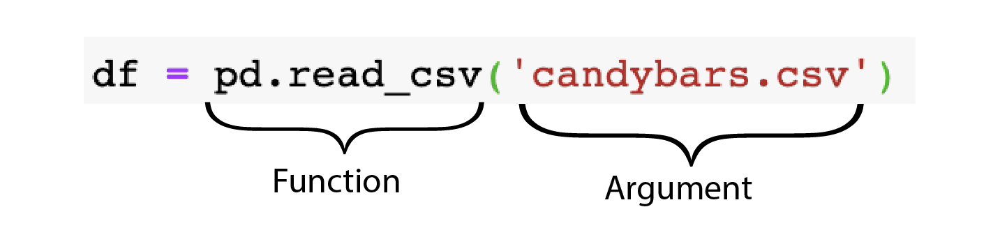

import pandas as pdWhat is Pandas?

Importing pandas
Reading in Data
Index(['name', 'weight', 'chocolate', 'peanuts', 'caramel', 'available_canada_america'], dtype='object')| name | weight | chocolate | peanuts | caramel | available_canada_america | |
|---|---|---|---|---|---|---|
| 0 | Coffee Crisp | 50 | 1 | 0 | 0 | Canada |
| 1 | Butterfinger | 184 | 1 | 1 | 1 | America |
Functions/Methods and Attributes
Attributes
Take candy.shape as an example.
In this case, our dataframe candy is our object and .shape is the attribute describing it.
Functions
In the example of pd.read_csv(), this function does the action of reading in our data.
Comments